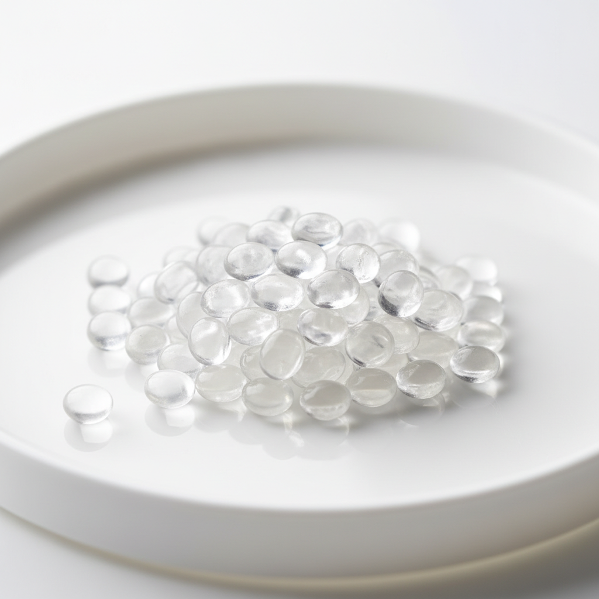

愛寶力™ M5800
展現卓越複合性能，與多種材料協同應用，有效提升機械性能。具高強度與高模量，可大幅提升改性材料模量並顯著降低吸水率。
下載技術資料 (PDF)MXD6（聚己二醯間苯二甲胺）具備高阻氧、高剛性、優異尺寸穩定性與耐化學性，適用工程塑料與阻隔包裝。
展現卓越複合性能，與多種材料協同應用，有效提升機械性能。具高強度與高模量，可大幅提升改性材料模量並顯著降低吸水率。
下載技術資料 (PDF)超高熔融指數，適用於高玻纖（50-60%）增強材料。即便高填充，仍能形成高光澤表面，適合需上漆或鍍膜的應用。
下載技術資料 (PDF)中粘度 MXD6 材料，具卓越的強度和模量。能完美適配玻纖或礦物增強體系，有效提升複合材料的綜合性能。
下載技術資料 (PDF)憑藉卓越阻隔性能，成為高阻隔包裝材料的理想選擇。廣泛應用於PET共混瓶、多層容器等，有效延長產品貨架週期。
下載技術資料 (PDF)